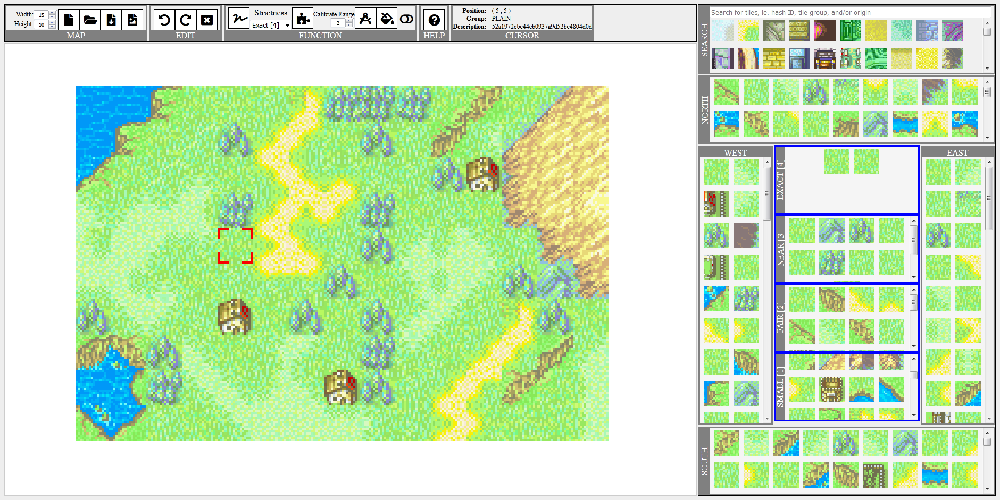
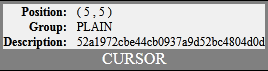
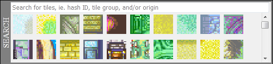
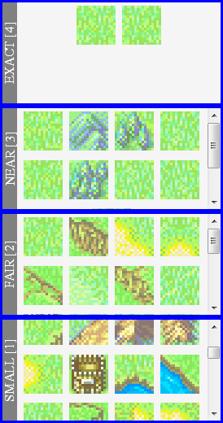

Tile Map Editor

Table of Contents
- Shortcuts
- Map
- Width / Height
- New
- Import
- Export As File
- Export As Image
- Edit
- Undo / Redo
- Clear Tile
- Function
- Random Tile
- Strictness
- Fill Tile
- Calibrate Range
- Calibrate Tiles
- Generate Map
- Animate Generation
- Help
- Print Debug Log
- Help
- Cursor
- Position
- Group
- Description
- Search
- Neighbor Panes
- Intersection Panes
Shortcuts
| Key | Description | Details |
|---|---|---|
| WASD or Arrow Keys | Move cursor | |
| Ctrl + Arrow Keys | Move cursor to the next non-empty tile | |
| z | Undo action | Undo / Redo |
| y | Redo action | |
| Delete | Clear tile at cursor | Clear Tile |
| r | Set random tile at cursor | Random Tile |
| f | Fill tile at cursor with tile that matches the strictness condition | Fill Tile |
| c | Calibrate tile(s) by re-adjusting adjacent tiles | Calibrate Tiles |
| [ | Decrease Calibrate Range | Calibrate Range |
| ] | Increase Calibrate Range | |
| g | Generate map | Generate Map |
| Page Up | Increase Strictness | Strictness |
| Page Down | Decrease Strictness | |
| Ctrl + f | Switch to search input | Search |
| p | Print Debug Log | Print Debug Log |
Map
Allows user to change the width / height, resets, imports, or exports the map.
Width / Height

Width is how wide (in tiles) the map is. Can be increased/decreased with up/down buttons or modified directly.
Range: 1 - 999
Range: 1 - 999
Height is how high (in tiles) the map is. Can be increased/decreased with up/down buttons or modified directly.
Range: 1 - 999
Range: 1 - 999
New
New clears and resets the map, and also clears the user action log.
Import
Opens file selector to Import map JSON file to load.
The JSON file can be obtained from Export As File.
The JSON file can be obtained from Export As File.
Export As File
Opens a new window containing the JSON map data of the current map.
In order to save the map, the user must save (for example, Ctrl + S) and save as a JSON file.
In addition, JSON data is automatically copied to clipboard. (Able to Ctrl + V or Paste)
In order to save the map, the user must save (for example, Ctrl + S) and save as a JSON file.
In addition, JSON data is automatically copied to clipboard. (Able to Ctrl + V or Paste)
Export As Image
Opens a new window containing the map image of the current map.
User may save (for example, Ctrl + S) and save as a PNG image file.
User may save (for example, Ctrl + S) and save as a PNG image file.
Edit
Allows user to undo / redo user action and clear tile.
Undo / Redo
Undo / redo user action, including modifying tiles or changing the map width / height.
Will be greyed out if it cannot undo / redo.
Shortcuts: z - Undo, y - Redo
Will be greyed out if it cannot undo / redo.
Shortcuts: z - Undo, y - Redo
Clear Tile
Clear tile at cursor. Replaces it with an EMPTY tile.
Shortcut: Delete
Shortcut: Delete
Function
Allows user to set tile(s) based on features, including: randomly filling, filling based on neighbors, calibrating fix ups, or generating the map.
Random Tile
Randomly sets tile at the cursor to a random tile.
Shortcut: r
Shortcut: r
Strictness
Setting to control how strict the generation is for Fill Tile, Calibrate Range, and Generate Map.
The options are:
Shortcuts: Page Up - Increase strictness, Page Down - Decrease strictness
The options are:
- Exact [4]
- Near [3]
- Fair [2]
- Small [1]
Shortcuts: Page Up - Increase strictness, Page Down - Decrease strictness
Fill Tile
Fill the tile at cursor calculated from a list of compatible tiles based on the neighbor tiles.
Uses the Strictness value in the calculations.
Shortcut: f
Uses the Strictness value in the calculations.
Shortcut: f
Calibrate Range
Calibrate Range used in Calibrate Tiles feature. It is the square radius from the cursor.
Range: 0 - 999
Shortcuts: [ - Decrease calibration range, ] - Increase calibration range
Range: 0 - 999
Shortcuts: [ - Decrease calibration range, ] - Increase calibration range
Calibrate Tiles

Calibrate the tile(s) around the cursor by deleting the tiles and refilling them. The range of the tiles affected around the cursor is based on Calibrate Range.
Uses the Strictness value in the calculations.
Shortcut: c
Uses the Strictness value in the calculations.
Shortcut: c
Generate Map
Generate map starting from the cursor. Then later sequentially fills the remaining empty tiles based on Strictness.
Can enable animation with Animate Generation.
Shortcut: g
Can enable animation with Animate Generation.
Shortcut: g
Animate Generation
Toggle to enable or disable animation for Calibrate Tiles or Generate Map.
Help
Prints debug log or opens up the help.
Print Debug Log
Print debug log information to console.
Right click webpage > Inspect > Console, to view debug information.
Button will be hidden unless enabled in code.
Shortcut: p
Right click webpage > Inspect > Console, to view debug information.
Button will be hidden unless enabled in code.
Shortcut: p
Help

Opens up the Help page.
Cursor

Shows details on the tile the cursor is on.
Hovering over the section block will show a tooltip popup showing the origin(s) of the tile image that were extracted from.
Hovering over the section block will show a tooltip popup showing the origin(s) of the tile image that were extracted from.
Position of the cursor in ( x , y ) format, starting from the top left.
Group of the tile at the cursor position.
Description of the tile at the cursor position. It is the hash ID of the tile.
Search

Allows user to search through all the tiles. Search by hash ID, tile group, and/or origin.
Hovering over a tile will show a preview of the tile on the map as well as a tooltip popup showing the tile information.
Clicking a tile will set the tile on the map at the cursor.
Clicking on the "SEARCH" title bar on the left of the section block will toggle between expanded and collapsed view.
Use '&' to filter with multiple search filter parameters such that results must contain all the input filters.
Use '!' to specify that the search results must not contain the input block of text.
Example 1: "group: wall&fire emblem 6&fire emblem 7" will show search results of tiles that are in WALL group, Fire Emblem 6, and Fire Emblem 7.
Example 2: "emblem 6&emblem 7/cutscenes&!emblem 7/chapters&!group: undefined" will show search results of tiles that are in Fire Emblem 6, are in a cutscene in Fire Emblem 7, but not in a chapter in Fire Emblem 7, and not in the UNDEFINED group.
Hovering over a tile will show a preview of the tile on the map as well as a tooltip popup showing the tile information.
Clicking a tile will set the tile on the map at the cursor.
Clicking on the "SEARCH" title bar on the left of the section block will toggle between expanded and collapsed view.
Use '&' to filter with multiple search filter parameters such that results must contain all the input filters.
Use '!' to specify that the search results must not contain the input block of text.
Example 1: "group: wall&fire emblem 6&fire emblem 7" will show search results of tiles that are in WALL group, Fire Emblem 6, and Fire Emblem 7.
Example 2: "emblem 6&emblem 7/cutscenes&!emblem 7/chapters&!group: undefined" will show search results of tiles that are in Fire Emblem 6, are in a cutscene in Fire Emblem 7, but not in a chapter in Fire Emblem 7, and not in the UNDEFINED group.
Neighbor Panes
The four directional (North, West, East, South) panes representing the possible neighbors of the tile at the cursor position.
Hovering over a tile will show a preview of the tile on the map at the respective direction from the cursor.
Clicking a tile will set the tile on the map at the respective direction from the cursor.
Hovering over a tile will show a preview of the tile on the map at the respective direction from the cursor.
Clicking a tile will set the tile on the map at the respective direction from the cursor.
Intersection Panes

The intersection of the neighbor's compatible tiles at the position of the cursor.
Uses the same design as Strictness.
Hovering over a tile will show a preview of the tile on the map.
Clicking a tile will set the tile on the map at the cursor.
Uses the same design as Strictness.
Hovering over a tile will show a preview of the tile on the map.
Clicking a tile will set the tile on the map at the cursor.